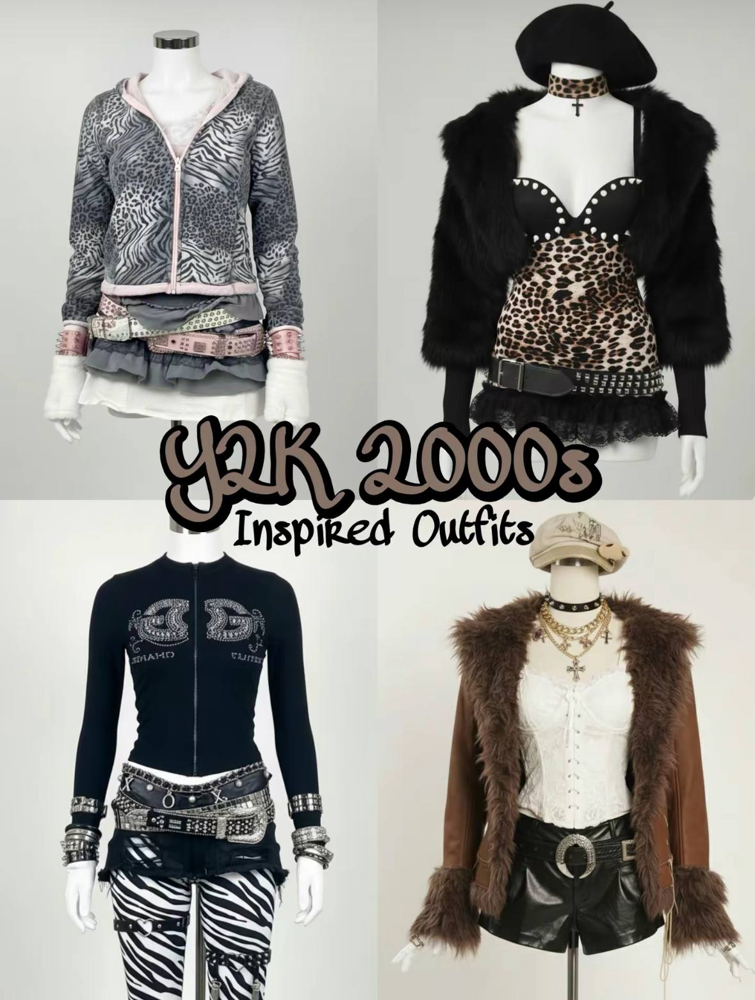

Пошук Стилів
Особистий Рейтинг
| Стиль | Рейтинг |
|---|---|
| Gothic Lolita | 10/10 |
| Shoujodark | 9.5/10 |
| Y2K | 9.0/10 |
| Grunge | 8.5/10 |
| Visual Kei | 7.5/10 |
| Jirai Kei | 6/10 |
Актуальні Стилі
Grunge
Ключові елементи: Фланель, оверсайз джинси, певна недбалість, багатошаровість.

Visual Kei
Ключові елементи: Андрогінність, складні зачіски, театральний макіяж, епатажність.

Y2K (Early 2000s)
Ключові елементи: Низька посадка, міні-спідниці, короткі топи, блискітки, велюр.

Gothic Lolita
Ключові елементи: Романтика і готика, об'ємні сукні, темні прикраси, ляльковий стиль.

Jirai Kei
Ключові елементи: Чорний/рожевий, банти, гольфи до колін.
Shoujodark
Ключові елементи: Багатошаровість, приглушені сірі тони, спідниці-плісе, гольфи/гетри, масивне взуття.